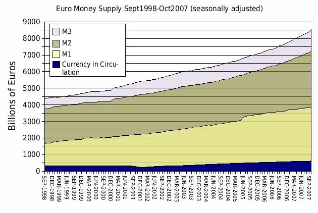
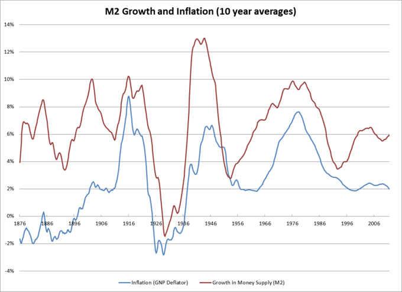
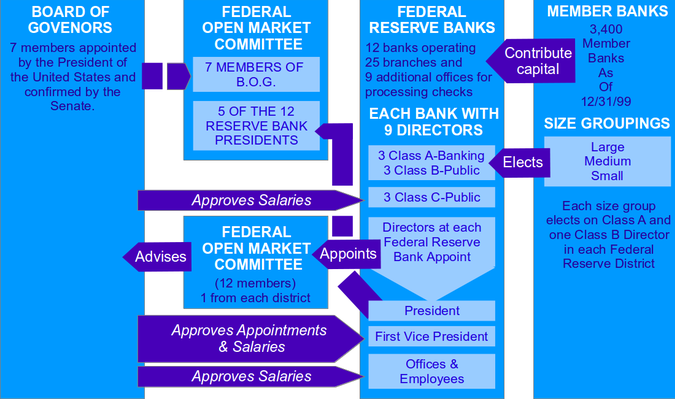
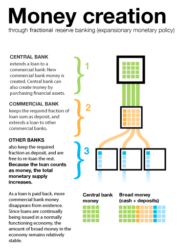
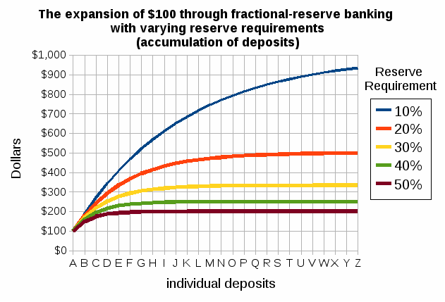
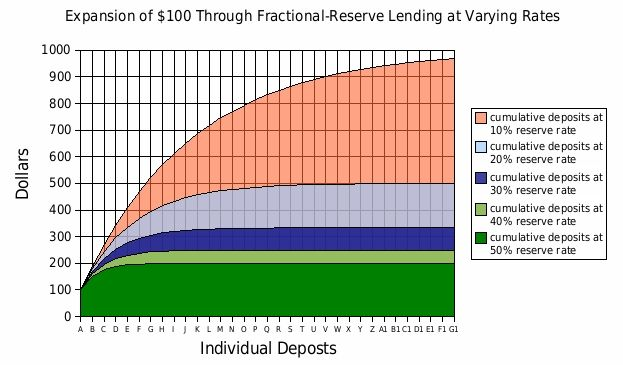
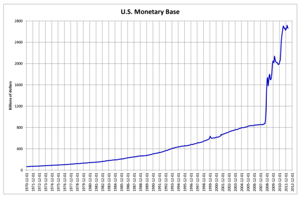

Money is any object that is generally accepted as payment for goods and services and the repayment of debt.
Distinguish between the three main functions of money: a medium of exchange, a unit of account, and a store of value
Money is any object that is generally accepted as payment for goods and services and repayment of debts in a given socioeconomic context or country. Money comes in three forms: commodity money, fiat money, and fiduciary money.
Many items have been historically used as commodity money, including naturally scarce precious metals, conch shells, barley beads, and other things that were considered to have value . The value of commodity money comes from the commodity out of which it is made. The commodity itself constitutes the money, and the money is the commodity.
Conch shells have been used as commodity money in the past. The value of commodity money is derived from the commodity out of which it is made.
Fiat money is money whose value is not derived from any intrinsic value or guarantee that it can be converted into a valuable commodity (such as gold). Instead, it has value only by government order (fiat). Usually, the government declares the fiat currency to be legal tender, making it unlawful to not accept the fiat currency as a means of repayment for all debts. Paper money is an example of fiat money.
Fiduciary money includes demand deposits (such as checking accounts) of banks. Fiduciary money is accepted on the basis of the trust its issuer (the bank) commands.
Most modern monetary systems are based on fiat money. However, for most of history, almost all money was commodity money, such as gold and silver coins.
Money has three primary functions. It is a medium of exchange, a unit of account, and a store of value:
Economists sometimes note additional functions of money, such as that of a standard of deferred payment and that of a measure of value. A "standard of deferred payment" is an acceptable way to settle a debt--a unit in which debts are denominated. The status of money as legal tender means that money can be used for the discharge of debts. Money can also act a as a standard measure and common denomination of trade. It is thus a basis for quoting and bargaining prices. Its most important usage is as a method for comparing the values of dissimilar objects.
The monetary economy is a significant improvement over the barter system, in which goods were exchanged directly for other goods.
Analyze how the characteristics of money make it an effective medium of exchange
Barter is a system of exchange in which goods or services are directly exchanged for other goods or services without using a medium of exchange, such as money . The reciprocal exchange is immediate and not delayed in time. It is usually bilateral, though it can be multilateral, and usually exists parallel to monetary systems in most developed countries, though to a very limited extent. The barter system has a number of limitations which make transactions very inefficient, including:
In a barter system, individuals possessing something of value could exchange it for something else of similar or greater value.
Despite the long list of limitations, the barter system has some advantages. It can replace money as the method of exchange in times of monetary crisis, such as when a the currency is either unstable (e.g. hyperinflation or deflationary spiral) or simply unavailable for conducting commerce. It can also be useful when there is little information about the credit worthiness of trade partners or when there is a lack of trust.
The money system is a significant improvement over the barter system. It provides a way to quantify the value of goods and communicate it to others. Money has several defining characteristics. It is:
Money serves four primary purposes. It is:
The use of money as a medium of exchange has removed the major difficulty of double coincidence of wants in the barter system. It separates the act of sale and purchase of goods and services and helps both parties in obtaining maximum satisfaction and profits independently.
M1 captures the most liquid components of the money supply, including currency held by the public and checkable deposits in banks.
Define M1
The Federal Reserve measures the money supply using three main monetary aggregates: M1, M2, and M3.
M1 is the narrowest measure of the money supply, including only money that can be spent directly. More specifically, M1 includes currency and all checkable deposits . Currency refers to the coins and paper money in the hands of the public. Checkable deposits refer to all spendable deposits in commercial banks and thrifts.
The M1 measure includes currency in the hands of the public and checkable deposits in commercial banks.
A broader measure of money than M1 includes not only all of the spendable balances in M1, but certain additional assets termed "near monies". Near monies cannot be spent as readily as currency or checking account money, but they can be turned into spendable balances with very little effort or cost. Near monies include what is in savings accounts and money-market mutual funds. The broader category of money that embraces all of these assets is called M2. M3 encompassed M2 plus relatively less liquid near monies. In practice, the measure of M3 is no longer used by the Federal Reserve.
Imagine that Laura deposits \$900 in her checking account in a world with no other money (M1=\$900). The bank sets 10% of the amount aside for required reserves, while the remaining \$810 can be lent out by the bank as credit. The M1 money supply increases by \$810 when the loan is made (M1=\$1,710). In the meantime, Laura writes a check for \$400. The total M1 money supply didn't change; it includes the \$400 check and the \$500 left in the checking account (M1=\$1,710). Laura's check is accidentally destroyed in the laundry. M1 and her checking account do not change, because the check is never cashed (M1=\$1,710). Meanwhile, the bank lends Mandy the \$810 credit that it has created. Mandy deposits the money in a checking account at another bank. The bank must keep 10% as reserves and has \$729 available for loans. This creates promise-to-pay money from a previous promise-to-pay, inflating the M1 money supply (M1=\$2,439). Mandy's bank now lends the money to someone else who deposits it in a checking account at another bank, and the process repeats itself.
M2 is a broader measure of the money supply than M1, including all M1 monies and those that could be quickly converted to liquid forms.
Define M2
There is no single "correct" measure of the money supply. Instead there are several measures, classified along a continuum between narrow and broad monetary aggregates. Narrow measures include only the most liquid assets, the ones most easily used to spend (for example, currency and checkable deposits). Broader measures add less liquid types of assets (certificates of deposit, etc.). The continuum corresponds to the way that different types of money are more or less controlled by monetary policy. Narrow measures include those more directly affected and controlled by monetary policy, whereas broader measures are less closely related to monetary policy actions.
The different types of money are typically classified as "M"s. Around the world, they range from M0 (the narrowest) to M3 (broadest), but which of the measures is actually the focus of policy formulation depends on a country's central bank.
M2 is one of the aggregates by which the Federal Reserve measures the money supply . It is a broader classification of money than M1 and a key economic indicator used to forecast inflation. M2 consists of all the liquid components of M1 plus near-monies. Near monies are relatively liquid financial assets that may be readily converted into M1 money. More specifically, near monies include savings deposits, small time deposits (less than \$100,000) that become readily available at maturity, and money market mutual funds.
Historically, the Federal Reserve has measured the money supply using the aggregates of M1, M2, and M3. The M2 aggregate includes M1 plus near-monies.
Imagine that Laura writes a check for \$1,000 and brings it to the bank to start a money market account. This would cause M1 to decrease by \$1,000, but M2 to stay the same. This is because M2 includes the money market account in addition to all the money counted in M1.
In addition to the commonly used M1 and M2 aggregates, several other measures of the money supply are used as well.
Explain how the money supply is measured
In addition to the commonly used M1 and M2 aggregates, there are several other measurements of the money supply that are used as well . More specifically:
The measures of the money supply are all related, but the use of different measures may lead economists to different conclusions.
The different forms of money in the government money supply statistics arise from the practice of fractional-reserve banking. Fractional-reserve banking is the practice whereby a bank retains only a portion of its customers' deposits as readily available reserves from which to satisfy demands for withdrawals. Whenever a bank gives out a loan in a fractional-reserve banking system, a new sum of money is created. This new type of money is what makes up the non-M0 components in the M1-M3 statistics.
Monetary policy is the process by which a monetary authority controls the money supply, often to produce stable prices and low unemployment.
Justify expansionary and contractionary monetary policy.
Monetary policy is the process by which the monetary authority of a country, which could be a government agency or a central bank, controls the supply of money, often targeting a rate of interest for the purpose of promoting economic growth and stability. The official goals usually include relatively stable prices and low unemployment.
Monetary policy is referred to as either being expansionary or contractionary, where an expansionary policy increases the total supply of money in the economy more rapidly than usual, and contractionary policy expands the money supply more slowly than usual or even shrinks it. Expansionary policy is traditionally used to try to combat unemployment in a recession by easing credit to entice businesses into expanding. Contractionary policy is intended to slow inflation in order to avoid the resulting distortions and deterioration of asset values, or to cool an overheating economy. Monetary policy differs from fiscal policy, which refers to taxation, government spending, and associated borrowing.
A monetary authority will typically pursue expansionary monetary policy when there is an output gap - that is, a country is producing output at a lower level than its potential output. Without a policy intervention the output gap may correct itself, if falling wages and prices shift the short-run aggregate supply curve to the right until the economy returns to the long-run equilibrium. Alternatively, the monetary authority could intervene in order to increase aggregate demand and close the output gap. Expansionary monetary policy consists of the tools that a central bank uses to achieve this increase in aggregate demand.
In practice, this means that a monetary authority will use the tools at its disposal in order to increase the money supply and decrease interest rates. Since interest rates represent the price of money, lower interest rates will cause the quantity of money demanded to increase, stimulating investment and spending. In addition, lower interest rates make a currency worth less in the currency exchange market. This reduces the demand for and increases the supply of dollars in the currency market, reducing the exchange rate (in foreign currency per dollar). A lower exchange rate makes a country's goods relatively more affordable for the rest of the world, stimulating exports and further increasing output.
By contrast, a monetary authority will pursue a contractionary monetary policy when it considers inflation a threat. Suppose, for example, that high short-run aggregate demand creates an equilibrium in which prices are higher than in the long-run equilibrium. This will cause high levels of inflation. In response, the monetary authority may reduce the money supply and thereby raise the interest rate. Investment falls as the interest rate rises. The higher interest rate also increases the demand for dollars as foreign investors shift their investments to the United States. Likewise, the supply of dollars declines. Consumers in the United States purchase domestic interest-bearing assets rather than purchasing assets abroad, taking advantage of the higher domestic interest rate. Increased demand and decreased supply cause an increase in the exchange rate, which boots imports while reducing exports. Thus, contractionary monetary policy causes aggregate demand to fall, thereby reducing the rate of inflation. .
The graph shows the relationship between the money supply and the inflation rate. By controlling the money supply, monetary authorities hope to influence the rate of inflation.
The Federal Reserve was created to promote financial stability, provide regulation and banking services, and conduct monetary policy.
Explain monetary policy as the main function of a central bank
Until 1913, the United States did not have a true central bank. The US suffered through a number of financial crises that eventually drove Congress to create the US central bank, the Federal Reserve (the Fed), through the Federal Reserve Act of 1913.
The Act established three key objectives for monetary policy: maximum employment, stable prices, and moderate long-term interest rates. The first two objectives are sometimes referred to as the Federal Reserve's dual mandate and are the most emphasized of the three.
Over the years, the Fed has expanded its duties to include conducting monetary policy, supervising and regulating banking institutions, maintaining the stability of the financial system, and providing financial services.
The Fed has three main policy tools: setting reserve requirements, operating the discount window and other credit facilities, and conducting open-market operations.
Commercial banks are required to hold a certain proportion of their deposits in reserves and not lend them out. This proportion is called the reserve requirement and is controlled by the Fed. By changing the reserve requirement, the Fed can impact the amount of money available for lending, and by extension, spending and investment.
Commercial banks are required to have a certain amount of reserves on hand at the end of each day. If they are going to come up short, they must borrow from other banks or the Fed. The Fed extends these loans through the discount window and charges what is called the discount rate. The discount rate is set by the Fed, and is important because it radiates throughout the economy: if it becomes more expensive to borrow at the discount window, interest rates will rise and borrowing will become more expensive economy-wide. In this way, the Fed can use the discount window to affect interest rates and the money supply .
The diagram shows how the central bank can increase the money supply by lending money through the discount window or purchasing bonds (open market operations).
The government borrows by issuing bonds. Recall that the interest rate that the government pays is determined by the price of the bond: the higher the price of the bond, the lower the interest rate. The Fed can affect the interest rate by conducting open-market operations (OMOs) in which it buys or sells bonds. Buying or selling bonds changes the demand or supply of the bonds, and therefore their price. By extension, OMOs change the interest rate, hopefully to achieve one of the Fed's monetary goals.
The Federal Reserve System (The Fed) was designed in order to maintain the central bank's independence and promote decentralized power.
Recall the structure of the Federal Reserve System of the United States
The Federal Reserve (the Fed) was designed to be independent of the Congress and the government. The idea justification for independence is that it allows the Fed to operate without being put under political pressure to take actions that may not be in the best long-term economic interest of the country.
The Federal Reserve System is composed of five parts :
The Fed can be thought of as having both private and public organization characteristics, though it considers itself to be private. On one hand, the Fed works toward achieving public goals such as moderate inflation and low unemployment. It does not exist to make money. On the other hand, it is, by design, separate from the government. It operates independently, and is not subject to political pressures directly as is Congress or the President.
The Federal Open Market Committee is responsible for conducting open market operations in order to achieve a target interest rate.
Describe the structure and operations of the Federal Open Market Committee (FOMC)
One of the primary tools used by the Federal Reserve (the Fed) to conduct monetary policy is open market operations: the buying and selling of federal government bonds in order to influence the money supply and interest rate. These operations are the primary responsibility of the Federal Open Market Committee (FOMC). The FOMC is a twelve-person committee composed of the seven members of the Board of Governors, plus a rotating combination of five presidents of the Federal Reserve Regional Banks. The president of the New York regional bank is always a member of the FOMC; the other four seats are filled by four of the other eleven bank presidents.
When conducting monetary policy the Fed sets a target for the federal funds rate, which it attempts to achieve using open market operations. To lower the federal funds rate, for example, the Fed buys securities on the open market, increasing the money supply. In order to raise the federal funds rate, on the other hand, the Fed sells securities and thereby reduces the money supply.
As mentioned previously, the aim of open market operations is to manipulate the short term interest rate and the total money supply. This involves meeting the demand for money at the target interest rate by buying and selling government securities or other financial instruments. Monetary targets, such as inflation, interest rates, or exchange rates, are used to guide this implementation.
Imagine the Fed is targeting a federal funds rate of 3%. If there is an increased demand for money and the Fed takes no action, interest rates will rise. This may produce unintended contractionary effects in the economy. Instead, the FOMC responds to an increase in the demand for money by going to the open market to buy a financial asset, such as government bonds, foreign currency, or gold. To pay for these assets, the Fed transfers bank reserves to the seller's bank and the seller's account is credited. Since the bank now has more reserves than it had before, it can lend out more money and the money supply increases. Thus, the increase in demand for money is met with an increase in supply, and the interest rate remains unchanged.
Conversely, if the central bank sells its financial assets on the open market, reserves are transferred from the buyer's bank back to the Fed. This reduces the amount of money that a bank may loan out and the total money supply falls. The process works because the central bank has the authority to bring money in and out of existence. They are the only point in the whole system with the unlimited ability to produce money.
The members of the FOMC meet eight times a year in order to vote on current monetary policies.
The Fed responded to the financial crisis with conventional open market operations and unconventional credit facilities and bailouts.
Summarize the monetary policy tools used by the Federal Reserve in response to the financial crisis of 2008.
In late 2007, the bursting of the U.S. housing bubble triggered the worst financial crisis since the Great Depression of the 1930s. It resulted in the threat of total collapse of large financial institutions, the bailout of banks by national governments, and downturns in stock markets around the world. The crisis caused the failure of businesses, huge declines in consumer wealth, and a downturn in economic activity that lead to the 2008-2012 global recession.
The Federal Reserve's response to the 2008 crisis saw the use of both conventional and new monetary tools in order to stabilize the economy, support market liquidity, and encourage economic activity. Conventional monetary policy suggests that in an economic downturn, a central bank should conduct open market operations in order to increase the money supply and lower interest rates. Lower interest rates stimulate loans, spending, and investment and help an economy escape from recession. Further, this type of financial crisis meant that banks' assets were suddenly worth far less; open market operations can ensure that these banks have the liquidity they need to carry out their financial activities.
The Federal Reserve (the Fed) did engage in these types of conventional operations in 2007 and 2008, cutting the target federal funds rate and the discount rate seven times. Normally, a low federal funds rate would encourage banks to borrow money in order to lend it out to firms and individuals, stimulating the economy, but in the aftermath of the financial crisis the Fed was unable to lower interest rates enough to successfully induce banks to make loans. One reason why traditional monetary policies failed is due to the zero lower bound and the low levels of inflation that accompanied the crisis.
The zero lower bound refers to the fact that the central bank cannot push nominal interest rates below 0%. This is because any creditor can do better by keeping their money in cash than by loaning it out at an interest rate below 0%. When inflation is high, however, central banks may be able to push the real interest rate below 0%. Recall that the nominal interest rate is the sum of the real interest rate and the expected inflation rate. If the nominal interest rate is 1% and inflation is 3%, the real interest rate is -2%. However, following the crisis, the U.S. experienced very low levels of inflation, and cutting the federal funds rate failed to provide enough economic stimulus to get the country out of the recession.
Unable to create interest rates low enough to encourage banks to resume lending money, the Fed turned to other, untried policy tools to encourage economic activity. To deal with the shrinking credit markets, the Fed created a selection of new credit facilities. The Primary Dealer Credit Facility (PDCF) allows the banks that normally handle open market operations on behalf of the Fed to apply for overnight loans. The Term Asset-Backed Securities Loan Facility uses the primary dealers to give companies access to loans based on asset-backed securities, such as those related to credit card or small business debt. These new credit facilities were created based on the hope that increasing liquidity in the market would induce firms and consumers to borrow and spend.
The Fed also provided targeted assistance to bail out large financial institutions that would have otherwise collapsed. During the crisis, housing prices fell and the number of foreclosures increased dramatically. Investors, banks, and other financial institutions came under pressure as their mortgage-based assets lost value. The Fed provided credit to these institutions in an attempt to mitigate the effect of falling asset prices and stem the crisis. This included bailouts of two housing finance firms - Fannie Mae and Freddie Mac - which had been established by the government in order to encourage home ownership and stimulate the housing market.
The Fed also provided billions of dollars of assistance to AIG, an insurance firm that had invested heavily in mortgage loans . Without the assistance the firm would have collapsed, possibly causing a chain reaction of failing financial institutions. The Fed determined that these consequences were too severe to be allowed - that is, that AIG was "too big to fail. " Many argue that when the Fed provided this type of emergency aid, it encouraged banks to take even more extreme risks, safe in the knowledge that they would be bailed out if their investments failed. Others praise the Fed for avoiding an even deeper financial crisis.
While central banks share responsibility for monetary policy, their structures, methods, and primary goals differ across countries.
Summarize the structure of the ECB, the Bank of England, and the People's Bank of China
The primary function of a central bank is to manage the nation's money supply (monetary policy), through active duties such as managing interest rates, setting the reserve requirement, and acting as a lender of last resort to the banking sector during times of bank insolvency or financial crisis. Central banks usually also have supervisory powers, intended to prevent bank runs and to reduce the risk that commercial banks and other financial institutions engage in reckless or fraudulent behavior. Central banks in most developed nations are institutionally designed to be independent from political interference. However, the structure, tools, and primary goals of these banks differ between countries.
The European Central Bank (ECB) is the central bank for the euro and administers the monetary policy of the Eurozone, which consists of 17 EU member states and is one of the largest currency areas in the world. The bank was established by the Treaty of Amsterdam in 1998, and is headquartered in Frankfurt, Germany. In contrast with the Federal Reserve, the ECB has the primary objective of maintaining price stability within the Eurozone, but is not charged with regulating unemployment or economic output.
In the U.S., liquidity is furnished to the economy primarily through the purchase of Treasury bonds by the Federal Reserve (the Fed), but the European system uses a different method. Instead, there are about 1,500 eligible banks that can bid for short term repurchase contracts, or "repos". The banks borrow cash, and when the repo notes come due the participating banks bid again. Because the loans have a short duration, the ECB can adjust interest rates and money supply by varying the quantity of notes offered at auction.
The ECB has three decision-making bodies: the Executive Board, the Governing Council, and the General Council. The Executive Board is responsible for implementing monetary policy and the day-to-day running of the bank. The Governing Council makes decisions about what monetary policies to implement. The General Council deals with the transitional issues that come about as new countries adopt the euro.
The Bank of England is the central bank of the United Kingdom and the model on which most modern central banks have been based. Established in 1694, it is the second oldest central bank in the world . It was established to act as the English Government's banker, and was privately owned from its foundation in 1694 until it was nationalized in 1946. In 1998, it became an independent public organization, owned by the Treasury Solicitor on behalf of the government, with independence in setting monetary policy. The primary goals of the Bank of England are to maintain price stability and support the economic policies of the government.
The Monetary Policy Committee is responsible for formulating monetary policy and for setting interest rates in order to maintain a given inflation target. The recently-established Financial Policy Committee is responsible for regulating the UK's financial sector in order to maintain financial stability.
The People's Bank of China (PBC) is the central bank of the People's Republic of China with the power to control monetary policy and regulate financial institutions in mainland China. The People's Bank of China has the most financial assets of any single public finance institution. It is responsible for making and implementing monetary policy for safeguarding the overall financial stability and provision of financial services.
The PBC has nine regional branches, as well as many sub-branches and six overseas representative offices. It is divided into 18 functional departments that oversee such issues as monetary policy, financial stability, anti-money laundering, and legal affairs. The top management of the PBC is composed of the governor and a certain number of deputy governors. The PBC adopts a governor responsibility system under which the governor supervises the overall work of the PBC while the deputy governors provide assistance to the governor to fulfill his or her responsibility.
A fractional reserve system is one in which banks hold reserves whose value is less than the sum of claims outstanding on those reserves.
Examine the impact of fractional reserve banking on the money supply
Banks operate by taking in deposits and making loans to lenders. They are able to do this because not every depositor needs her money on the same day. Thus, banks can lend out some of their depositors' money, while keeping some on hand to satisfy daily withdrawals by depositors. This is called the fractional-reserve banking system: banks only hold a fraction of total deposits as cash on hand.
The fraction of deposits that a bank must hold as reserves rather than loan out is called the reserve ratio (or the reserve requirement) and is set by the Federal Reserve. If, for example, the reserve requirement is 1%, then a bank must hold reserves equal to 1% of their total customer deposits. These assets are typically held in the form of physical cash stored in a bank vault and in reserves deposited with the central bank.
Banks can also choose to hold reserves in excess of the required level. Any reserves beyond the required reserves are called excess reserves. Excess reserves plus required reserves equal total reserves. In general, since banks make less money from holding excess reserves than they would lending them out, economists assume that banks seek to hold no excess reserves.
Because banks are only required to keep a fraction of their deposits in reserve and may loan out the rest, banks are able to create money. To understand this, imagine that you deposit \$100 at your bank. The bank is required to keep \$10 as reserves but may lend out \$90 to another individual or business. This loan is new money; the bank created it when it issued the loan. In fact, the vast majority of money in the economy today comes from these loans created by banks. Likewise when a loan is repaid, that money disappears from the economy until the bank issues another loan .
The diagram shows the process through which commercial banks create money by issuing loans.
Thus, there are two ways that a central bank can use this process to increase or decrease the money supply. First, it can adjust the reserve ratio. A lower reserve ratio means that banks can issue more loans, increasing the money supply. Second, it can create or destroy reserves. Creating reserves means that commercial banks have more reserves with which they can satisfy the reserve ratio requirement, leading to more loans and an increase in the money supply.
Fractional-reserve banking ordinarily functions smoothly. Relatively few depositors demand payment at any given time, and banks maintain a buffer of reserves to cover depositors' cash withdrawals and other demands for funds. However, banks also have an incentive to loan out as much money as possible and keep only a minimum buffer of reserves, since they earn more on these loans than they do on the reserves. Mandating a reserve requirement helps to ensure that banks have the ability to meet their obligations.
The amount of money created by banks depends on the size of the deposit and the money multiplier.
Calculate the change in money supply given the money multiplier, an initial deposit and the reserve ratio
To understand the process of money creation, let us create a hypothetical system of banks. We will focus on two banks in this system: Anderson Bank and Brentwood Bank. Assume that all banks are required to hold reserves equal to 10% of their customer deposits. When a bank's excess reserves equal zero, it is loaned up.
Anderson and Brentwood both operate in a financial system with a 10% reserve requirement. Each has \$10,000 in deposits and no excess reserves, so each has \$9,000 in loans outstanding, and \$10,000 in deposit balances held by customers.
Suppose a customer now deposits \$1,000 in Anderson Bank. Anderson will loan out the maximum amount (90%) and hold the required 10% as reserves. There are now \$11,000 in deposits in Anderson with \$9,900 in loans outstanding.
The debtor takes her \$900 loan and deposits it in Brentwood bank. Brentwood's deposits now total \$10,900. Thus, you can see that total deposits were \$20,000 before the initial \$1,000 deposit, and are now \$21,900 after. Even though only \$1,000 were added to the system, the amount of money in the system increased by \$1,900. The \$900 in checkable deposits is new money; Anderson created it when it issued the \$900 loan.
Mathematically, the relationship between reserve requirements (rr), deposits, and money creation is given by the deposit multiplier (m). The deposit multiplier is the ratio of the maximum possible change in deposits to the change in reserves. When banks in the economy have made the maximum legal amount of loans (zero excess reserves), the deposit multiplier is equal to the reciprocal of the required reserve ratio ($m=1 \div rr$).
In the above example the deposit multiplier is 1/0.1, or 10. Thus, with a required reserve ratio of 0.1, an increase in reserves of \$1 can increase the money supply by up to \$10 .
The graph shows the total amount of money that can be created with the addition of \$100 in reserves, using different reserve requirements as examples.
The money multiplier measures the maximum amount of commercial bank money that can be created by a given unit of central bank money.
Explain how the money multiplier works in theory
In order to understand the money multiplier, it's important to understand the difference between commercial bank money and central bank money. When you think of money, what you probably imagine is commercial bank money. This consists of the dollars in your bank account - the money that you use when you write a check or use a debit or credit card. This money is created when commercial banks make loans to companies or individuals. Central bank money, on the other hand, is the money created by the central bank and used within the banking system. It consists of bank reserves held in accounts with the central bank, as well as physical currency held in bank vaults.
The money multiplier measures the maximum amount of commercial bank money that can be created by a given unit of central bank money. That is, in a fractional-reserve banking system, the total amount of loans that commercial banks are allowed to extend (the commercial bank money that they can legally create) is a multiple of reserves; this multiple is the reciprocal of the reserve ratio. We can derive the money multiplier mathematically, writing M for commercial bank money (loans), R for reserves (central bank money), and RR for the reserve ratio. We start with the reserve ratio requirement that the the fraction of deposits that a bank keeps as reserves is at least the reserve ratio:
$R \div M \geq RR$
Taking the reciprocal:
$M \div R \leq 1 \div RR$
Therefore:
$M \leq R \times 1 \div RR$
The above equation states that the total supply of commercial bank money is, at most, the amount of reserves times the reciprocal of the reserve ratio (the money multiplier) .
The graph shows the theoretical amount of money that can be created with different reserve requirements.
If banks lend out close to the maximum allowed by their reserves, then the inequality becomes an approximate equality, and commercial bank money is central bank money times the multiplier. If banks instead lend less than the maximum, accumulating excess reserves, then commercial bank money will be less than central bank money times the theoretical multiplier. In theory banks should always lend out the maximum allowed by their reserves, since they can receive a higher interest rate on loans than they can on money held in reserves.
Theoretically, then, a central bank can change the money supply in an economy by changing the reserve requirements. A 10% reserve requirement creates a total money supply equal to 10 times the amount of reserves in the economy; a 20% reserve requirement creates a total money supply equal to five times the amount of reserves in the economy.
In reality, it is very unlikely that the money supply will be exactly equal to reserves times the money multiplier.
Explain factors that prevent the money multiplier from working empirically as it does theoretically
The money multiplier in theory makes a number of assumptions that do not always necessarily hold in the real world. It assumes that people deposit all of their money and banks lend out all of the money they can (they hold no excess reserves). It also assumes that people instantaneously spend all of their loans. In reality, not all of these are true, meaning that the observed money multiplier rarely conforms to the theoretical money multiplier.
First, some banks may choose to hold excess reserves. In the decades prior to the financial crisis of 2007-2008, this was very rare - banks held next to no excess reserves, lending out the maximum amount possible. During this time, the relationship between reserves, reserve requirements, and the money supply was relatively close to that predicted by economic theory. After the crisis, however, banks increased their excess reserves dramatically, climbing above \$900 billion in January of 2009 and reaching \$2.3 trillion in October of 2013 . The presence of these excess reserves suggests that the reserve requirement ratio is not exerting an influence on the money supply.
The monetary base is the sum of currency and reserves held in accounts at the central bank. After the financial crisis the monetary base increased dramatically: the result of banks starting to hold excess reserves as well as the central bank increasing the supply of reserves.
Second, customers may hold their savings in cash rather than in bank deposits. Recall that when cash is stored in a bank vault it is included in the bank's supply of reserves. When it is withdrawn from the bank and held by consumers, however, it no longer serves as reserves and banks cannot use it to issue loans. When people hold more cash, the total supply of reserves available to banks goes down and the total money supply falls.
Third, some loan proceeds may not be spent. Imagine that the reserve requirement ratio is 10% and a customer deposits \$1,000 into a bank. The bank then uses this deposit to make a \$900 loan to another one of its customers. If the customer fails to spend this money, it will simply sit in the bank account and the full multiplier effect will not apply. In this case, the \$1,000 deposit allowed the bank to create \$900 of new money, rather than the \$10,000 of new money that would be created if the entire loan proceeds were spent.
{kind=link}
{kind=link}
{kind=link}
{kind=link}
{kind=link}
{kind=link}
{kind=link}